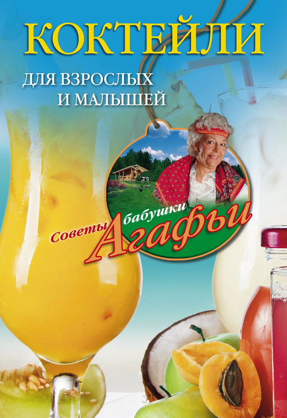

Лечебные коктейли. Для повышения иммунитета.

? Шиповнико-медовый чай. 20 г плодов шиповника, 15 г ягод годжи, 15 г меда, 5 г лимонного сока, 200 мл воды. Сушеные ягоды шиповника мельчите, облейте кипятком, и варите 10 минут в эмалированной посуде при плотно прикрытой крышке, дайте настояться 10 минут. Отвар фильтруйте. Добавьте мед, лимонный сок.
? Чай из шиповника и чабреца. 10 г сушеных ягод шиповника, 10 г ягод годжи, 5 г сушеных листьев чабреца, 15 г меда, 200 мл воды. Плоды шиповника мельчите, облейте кипящей водой и варите 5 минут, а далее добавьте листья чабреца. Настаивайте 10 минут, профильтруйте, добавьте по вкусу мед.
? Чай из шиповника и черной смородины. Смешайте плоды шиповника, ягоды годжи и черной смородины поровну. 1 ст. ложку измельченной смеси заварите 500 мл кипящей воды, дайте настояться не менее 1 часа в хорошо прикрытой посуде, профильтруйте сквозь марлю, добавьте по вкусу сахарный песок. Пейте по 1/2 стакана 3 раза в день.
? Чай из шиповника, черной смородины и крапивы. Смешайте (3:1:2:2) плоды шиповника, черной смородины, ягоды годжи и листья крапивы. 1 ст. ложку состава облейте 500 мл кипящей воды, выдержите час, фильтруйте, добавьте сахарный песок по вкусу. Пейте по 1/2 стакана 3 раза в день.
? Чай из шиповника, черной смородины, крапивы и моркови. Соедините (3:1:3:3:1) плоды шиповника, ягоды черной смородины, листья крапивы, корень моркови, листья годжи. 1 ст. ложку смеси облейте 500 мл кипящей воды, и кипятите 10 минут, выдержите в хорошо прикрытой посуде 4 часа в прохладном и темном месте, затем профильтруйте. Пейте по 1/2 стакана 3 раза в день.
? Чай из шиповника, брусники, смородины и малины. Возьмите и смешайте в равных количествах плоды шиповника, ягоды годжи, листья малины, листья смородины, листья брусники. После этого 2 ст. ложки состава заварите 200 мл кипящей воды, и кипятите 10 минут, выдержите в плотно прикрытой емкости до охлаждения, затем фильтруйте, добавьте по вкусу сахарный песок. Пейте по 1/2 стакана 2 раза в день.